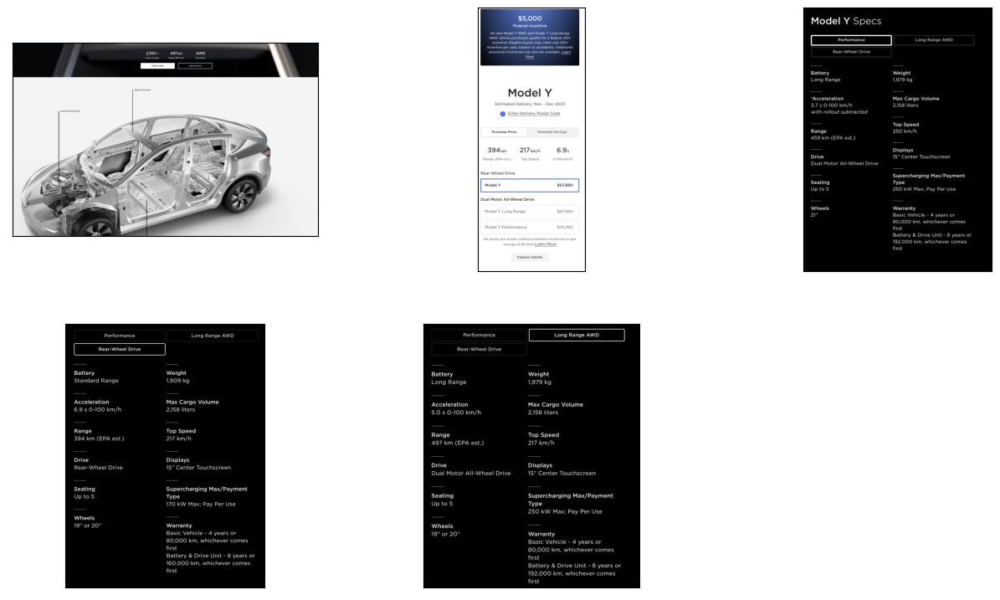

Multi-modal Models with LlamaIndex#
With LlamaIndex we can also work with image data, but first we need to install a few dependencies first:
%pip install llama_index ftfy regex tqdm
%pip install git+https://github.com/openai/CLIP.git
%pip install torch torchvision
%pip install matplotlib scikit-image
%pip install -U qdrant_client
Requirement already satisfied: llama_index in /Users/victorgallego/miniforge3/lib/python3.10/site-packages (0.10.27)
Collecting ftfy
Downloading ftfy-6.2.0-py3-none-any.whl.metadata (7.3 kB)
Requirement already satisfied: regex in /Users/victorgallego/miniforge3/lib/python3.10/site-packages (2023.12.25)
Requirement already satisfied: tqdm in /Users/victorgallego/miniforge3/lib/python3.10/site-packages (4.66.2)
Requirement already satisfied: llama-index-agent-openai<0.3.0,>=0.1.4 in /Users/victorgallego/miniforge3/lib/python3.10/site-packages (from llama_index) (0.2.2)
Requirement already satisfied: llama-index-cli<0.2.0,>=0.1.2 in /Users/victorgallego/miniforge3/lib/python3.10/site-packages (from llama_index) (0.1.11)
Requirement already satisfied: llama-index-core<0.11.0,>=0.10.27 in /Users/victorgallego/miniforge3/lib/python3.10/site-packages (from llama_index) (0.10.27)
Requirement already satisfied: llama-index-embeddings-openai<0.2.0,>=0.1.5 in /Users/victorgallego/miniforge3/lib/python3.10/site-packages (from llama_index) (0.1.7)
Requirement already satisfied: llama-index-indices-managed-llama-cloud<0.2.0,>=0.1.2 in /Users/victorgallego/miniforge3/lib/python3.10/site-packages (from llama_index) (0.1.5)
Requirement already satisfied: llama-index-legacy<0.10.0,>=0.9.48 in /Users/victorgallego/miniforge3/lib/python3.10/site-packages (from llama_index) (0.9.48)
Requirement already satisfied: llama-index-llms-openai<0.2.0,>=0.1.13 in /Users/victorgallego/miniforge3/lib/python3.10/site-packages (from llama_index) (0.1.14)
Requirement already satisfied: llama-index-multi-modal-llms-openai<0.2.0,>=0.1.3 in /Users/victorgallego/miniforge3/lib/python3.10/site-packages (from llama_index) (0.1.4)
Requirement already satisfied: llama-index-program-openai<0.2.0,>=0.1.3 in /Users/victorgallego/miniforge3/lib/python3.10/site-packages (from llama_index) (0.1.5)
Requirement already satisfied: llama-index-question-gen-openai<0.2.0,>=0.1.2 in /Users/victorgallego/miniforge3/lib/python3.10/site-packages (from llama_index) (0.1.3)
Requirement already satisfied: llama-index-readers-file<0.2.0,>=0.1.4 in /Users/victorgallego/miniforge3/lib/python3.10/site-packages (from llama_index) (0.1.13)
Requirement already satisfied: llama-index-readers-llama-parse<0.2.0,>=0.1.2 in /Users/victorgallego/miniforge3/lib/python3.10/site-packages (from llama_index) (0.1.4)
Requirement already satisfied: wcwidth<0.3.0,>=0.2.12 in /Users/victorgallego/miniforge3/lib/python3.10/site-packages (from ftfy) (0.2.13)
Requirement already satisfied: openai>=1.14.0 in /Users/victorgallego/miniforge3/lib/python3.10/site-packages (from llama-index-agent-openai<0.3.0,>=0.1.4->llama_index) (1.16.0)
Requirement already satisfied: PyYAML>=6.0.1 in /Users/victorgallego/miniforge3/lib/python3.10/site-packages (from llama-index-core<0.11.0,>=0.10.27->llama_index) (6.0.1)
Requirement already satisfied: SQLAlchemy>=1.4.49 in /Users/victorgallego/miniforge3/lib/python3.10/site-packages (from SQLAlchemy[asyncio]>=1.4.49->llama-index-core<0.11.0,>=0.10.27->llama_index) (2.0.29)
Requirement already satisfied: aiohttp<4.0.0,>=3.8.6 in /Users/victorgallego/miniforge3/lib/python3.10/site-packages (from llama-index-core<0.11.0,>=0.10.27->llama_index) (3.9.3)
Requirement already satisfied: dataclasses-json in /Users/victorgallego/miniforge3/lib/python3.10/site-packages (from llama-index-core<0.11.0,>=0.10.27->llama_index) (0.6.4)
Requirement already satisfied: deprecated>=1.2.9.3 in /Users/victorgallego/miniforge3/lib/python3.10/site-packages (from llama-index-core<0.11.0,>=0.10.27->llama_index) (1.2.14)
Requirement already satisfied: dirtyjson<2.0.0,>=1.0.8 in /Users/victorgallego/miniforge3/lib/python3.10/site-packages (from llama-index-core<0.11.0,>=0.10.27->llama_index) (1.0.8)
Requirement already satisfied: fsspec>=2023.5.0 in /Users/victorgallego/miniforge3/lib/python3.10/site-packages (from llama-index-core<0.11.0,>=0.10.27->llama_index) (2024.2.0)
Requirement already satisfied: httpx in /Users/victorgallego/miniforge3/lib/python3.10/site-packages (from llama-index-core<0.11.0,>=0.10.27->llama_index) (0.27.0)
Requirement already satisfied: llamaindex-py-client<0.2.0,>=0.1.16 in /Users/victorgallego/miniforge3/lib/python3.10/site-packages (from llama-index-core<0.11.0,>=0.10.27->llama_index) (0.1.16)
Requirement already satisfied: nest-asyncio<2.0.0,>=1.5.8 in /Users/victorgallego/miniforge3/lib/python3.10/site-packages (from llama-index-core<0.11.0,>=0.10.27->llama_index) (1.6.0)
Requirement already satisfied: networkx>=3.0 in /Users/victorgallego/miniforge3/lib/python3.10/site-packages (from llama-index-core<0.11.0,>=0.10.27->llama_index) (3.2.1)
Requirement already satisfied: nltk<4.0.0,>=3.8.1 in /Users/victorgallego/miniforge3/lib/python3.10/site-packages (from llama-index-core<0.11.0,>=0.10.27->llama_index) (3.8.1)
Requirement already satisfied: numpy in /Users/victorgallego/miniforge3/lib/python3.10/site-packages (from llama-index-core<0.11.0,>=0.10.27->llama_index) (1.26.4)
Requirement already satisfied: pandas in /Users/victorgallego/miniforge3/lib/python3.10/site-packages (from llama-index-core<0.11.0,>=0.10.27->llama_index) (1.4.2)
Requirement already satisfied: pillow>=9.0.0 in /Users/victorgallego/miniforge3/lib/python3.10/site-packages (from llama-index-core<0.11.0,>=0.10.27->llama_index) (9.1.1)
Requirement already satisfied: requests>=2.31.0 in /Users/victorgallego/miniforge3/lib/python3.10/site-packages (from llama-index-core<0.11.0,>=0.10.27->llama_index) (2.31.0)
Requirement already satisfied: tenacity<9.0.0,>=8.2.0 in /Users/victorgallego/miniforge3/lib/python3.10/site-packages (from llama-index-core<0.11.0,>=0.10.27->llama_index) (8.2.3)
Requirement already satisfied: tiktoken>=0.3.3 in /Users/victorgallego/miniforge3/lib/python3.10/site-packages (from llama-index-core<0.11.0,>=0.10.27->llama_index) (0.6.0)
Requirement already satisfied: typing-extensions>=4.5.0 in /Users/victorgallego/miniforge3/lib/python3.10/site-packages (from llama-index-core<0.11.0,>=0.10.27->llama_index) (4.10.0)
Requirement already satisfied: typing-inspect>=0.8.0 in /Users/victorgallego/miniforge3/lib/python3.10/site-packages (from llama-index-core<0.11.0,>=0.10.27->llama_index) (0.9.0)
Requirement already satisfied: wrapt in /Users/victorgallego/miniforge3/lib/python3.10/site-packages (from llama-index-core<0.11.0,>=0.10.27->llama_index) (1.16.0)
Requirement already satisfied: beautifulsoup4<5.0.0,>=4.12.3 in /Users/victorgallego/miniforge3/lib/python3.10/site-packages (from llama-index-readers-file<0.2.0,>=0.1.4->llama_index) (4.12.3)
Requirement already satisfied: pymupdf<2.0.0,>=1.23.21 in /Users/victorgallego/miniforge3/lib/python3.10/site-packages (from llama-index-readers-file<0.2.0,>=0.1.4->llama_index) (1.24.1)
Requirement already satisfied: pypdf<5.0.0,>=4.0.1 in /Users/victorgallego/miniforge3/lib/python3.10/site-packages (from llama-index-readers-file<0.2.0,>=0.1.4->llama_index) (4.1.0)
Requirement already satisfied: striprtf<0.0.27,>=0.0.26 in /Users/victorgallego/miniforge3/lib/python3.10/site-packages (from llama-index-readers-file<0.2.0,>=0.1.4->llama_index) (0.0.26)
Requirement already satisfied: llama-parse<0.5.0,>=0.4.0 in /Users/victorgallego/miniforge3/lib/python3.10/site-packages (from llama-index-readers-llama-parse<0.2.0,>=0.1.2->llama_index) (0.4.0)
Requirement already satisfied: aiosignal>=1.1.2 in /Users/victorgallego/miniforge3/lib/python3.10/site-packages (from aiohttp<4.0.0,>=3.8.6->llama-index-core<0.11.0,>=0.10.27->llama_index) (1.3.1)
Requirement already satisfied: attrs>=17.3.0 in /Users/victorgallego/miniforge3/lib/python3.10/site-packages (from aiohttp<4.0.0,>=3.8.6->llama-index-core<0.11.0,>=0.10.27->llama_index) (23.2.0)
Requirement already satisfied: frozenlist>=1.1.1 in /Users/victorgallego/miniforge3/lib/python3.10/site-packages (from aiohttp<4.0.0,>=3.8.6->llama-index-core<0.11.0,>=0.10.27->llama_index) (1.4.1)
Requirement already satisfied: multidict<7.0,>=4.5 in /Users/victorgallego/miniforge3/lib/python3.10/site-packages (from aiohttp<4.0.0,>=3.8.6->llama-index-core<0.11.0,>=0.10.27->llama_index) (6.0.5)
Requirement already satisfied: yarl<2.0,>=1.0 in /Users/victorgallego/miniforge3/lib/python3.10/site-packages (from aiohttp<4.0.0,>=3.8.6->llama-index-core<0.11.0,>=0.10.27->llama_index) (1.9.4)
Requirement already satisfied: async-timeout<5.0,>=4.0 in /Users/victorgallego/miniforge3/lib/python3.10/site-packages (from aiohttp<4.0.0,>=3.8.6->llama-index-core<0.11.0,>=0.10.27->llama_index) (4.0.3)
Requirement already satisfied: soupsieve>1.2 in /Users/victorgallego/miniforge3/lib/python3.10/site-packages (from beautifulsoup4<5.0.0,>=4.12.3->llama-index-readers-file<0.2.0,>=0.1.4->llama_index) (2.5)
Requirement already satisfied: pydantic>=1.10 in /Users/victorgallego/miniforge3/lib/python3.10/site-packages (from llamaindex-py-client<0.2.0,>=0.1.16->llama-index-core<0.11.0,>=0.10.27->llama_index) (2.6.4)
Requirement already satisfied: anyio in /Users/victorgallego/miniforge3/lib/python3.10/site-packages (from httpx->llama-index-core<0.11.0,>=0.10.27->llama_index) (4.3.0)
Requirement already satisfied: certifi in /Users/victorgallego/miniforge3/lib/python3.10/site-packages (from httpx->llama-index-core<0.11.0,>=0.10.27->llama_index) (2024.2.2)
Requirement already satisfied: httpcore==1.* in /Users/victorgallego/miniforge3/lib/python3.10/site-packages (from httpx->llama-index-core<0.11.0,>=0.10.27->llama_index) (1.0.5)
Requirement already satisfied: idna in /Users/victorgallego/miniforge3/lib/python3.10/site-packages (from httpx->llama-index-core<0.11.0,>=0.10.27->llama_index) (3.6)
Requirement already satisfied: sniffio in /Users/victorgallego/miniforge3/lib/python3.10/site-packages (from httpx->llama-index-core<0.11.0,>=0.10.27->llama_index) (1.3.1)
Requirement already satisfied: h11<0.15,>=0.13 in /Users/victorgallego/miniforge3/lib/python3.10/site-packages (from httpcore==1.*->httpx->llama-index-core<0.11.0,>=0.10.27->llama_index) (0.14.0)
Requirement already satisfied: click in /Users/victorgallego/miniforge3/lib/python3.10/site-packages (from nltk<4.0.0,>=3.8.1->llama-index-core<0.11.0,>=0.10.27->llama_index) (8.1.7)
Requirement already satisfied: joblib in /Users/victorgallego/miniforge3/lib/python3.10/site-packages (from nltk<4.0.0,>=3.8.1->llama-index-core<0.11.0,>=0.10.27->llama_index) (1.3.2)
Requirement already satisfied: distro<2,>=1.7.0 in /Users/victorgallego/miniforge3/lib/python3.10/site-packages (from openai>=1.14.0->llama-index-agent-openai<0.3.0,>=0.1.4->llama_index) (1.9.0)
Requirement already satisfied: PyMuPDFb==1.24.1 in /Users/victorgallego/miniforge3/lib/python3.10/site-packages (from pymupdf<2.0.0,>=1.23.21->llama-index-readers-file<0.2.0,>=0.1.4->llama_index) (1.24.1)
Requirement already satisfied: charset-normalizer<4,>=2 in /Users/victorgallego/miniforge3/lib/python3.10/site-packages (from requests>=2.31.0->llama-index-core<0.11.0,>=0.10.27->llama_index) (3.3.2)
Requirement already satisfied: urllib3<3,>=1.21.1 in /Users/victorgallego/miniforge3/lib/python3.10/site-packages (from requests>=2.31.0->llama-index-core<0.11.0,>=0.10.27->llama_index) (2.2.1)
Requirement already satisfied: greenlet!=0.4.17 in /Users/victorgallego/miniforge3/lib/python3.10/site-packages (from SQLAlchemy[asyncio]>=1.4.49->llama-index-core<0.11.0,>=0.10.27->llama_index) (3.0.3)
Requirement already satisfied: mypy-extensions>=0.3.0 in /Users/victorgallego/miniforge3/lib/python3.10/site-packages (from typing-inspect>=0.8.0->llama-index-core<0.11.0,>=0.10.27->llama_index) (1.0.0)
Requirement already satisfied: marshmallow<4.0.0,>=3.18.0 in /Users/victorgallego/miniforge3/lib/python3.10/site-packages (from dataclasses-json->llama-index-core<0.11.0,>=0.10.27->llama_index) (3.21.1)
Requirement already satisfied: python-dateutil>=2.8.1 in /Users/victorgallego/miniforge3/lib/python3.10/site-packages (from pandas->llama-index-core<0.11.0,>=0.10.27->llama_index) (2.8.2)
Requirement already satisfied: pytz>=2020.1 in /Users/victorgallego/miniforge3/lib/python3.10/site-packages (from pandas->llama-index-core<0.11.0,>=0.10.27->llama_index) (2024.1)
Requirement already satisfied: exceptiongroup>=1.0.2 in /Users/victorgallego/miniforge3/lib/python3.10/site-packages (from anyio->httpx->llama-index-core<0.11.0,>=0.10.27->llama_index) (1.2.0)
Requirement already satisfied: packaging>=17.0 in /Users/victorgallego/miniforge3/lib/python3.10/site-packages (from marshmallow<4.0.0,>=3.18.0->dataclasses-json->llama-index-core<0.11.0,>=0.10.27->llama_index) (24.0)
Requirement already satisfied: annotated-types>=0.4.0 in /Users/victorgallego/miniforge3/lib/python3.10/site-packages (from pydantic>=1.10->llamaindex-py-client<0.2.0,>=0.1.16->llama-index-core<0.11.0,>=0.10.27->llama_index) (0.6.0)
Requirement already satisfied: pydantic-core==2.16.3 in /Users/victorgallego/miniforge3/lib/python3.10/site-packages (from pydantic>=1.10->llamaindex-py-client<0.2.0,>=0.1.16->llama-index-core<0.11.0,>=0.10.27->llama_index) (2.16.3)
Requirement already satisfied: six>=1.5 in /Users/victorgallego/miniforge3/lib/python3.10/site-packages (from python-dateutil>=2.8.1->pandas->llama-index-core<0.11.0,>=0.10.27->llama_index) (1.16.0)
Downloading ftfy-6.2.0-py3-none-any.whl (54 kB)
━━━━━━━━━━━━━━━━━━━━━━━━━━━━━━━━━━━━━━━━ 54.4/54.4 kB 3.0 MB/s eta 0:00:00
?25hInstalling collected packages: ftfy
Successfully installed ftfy-6.2.0
Note: you may need to restart the kernel to use updated packages.
Collecting git+https://github.com/openai/CLIP.git
Cloning https://github.com/openai/CLIP.git to /private/var/folders/l_/k13w4mhd5hv4bddxwqz8qdfw0000gn/T/pip-req-build-fbp11rpm
Running command git clone --filter=blob:none --quiet https://github.com/openai/CLIP.git /private/var/folders/l_/k13w4mhd5hv4bddxwqz8qdfw0000gn/T/pip-req-build-fbp11rpm
Resolved https://github.com/openai/CLIP.git to commit a1d071733d7111c9c014f024669f959182114e33
Preparing metadata (setup.py) ... ?25ldone
?25hRequirement already satisfied: ftfy in /Users/victorgallego/miniforge3/lib/python3.10/site-packages (from clip==1.0) (6.2.0)
Requirement already satisfied: regex in /Users/victorgallego/miniforge3/lib/python3.10/site-packages (from clip==1.0) (2023.12.25)
Requirement already satisfied: tqdm in /Users/victorgallego/miniforge3/lib/python3.10/site-packages (from clip==1.0) (4.66.2)
Requirement already satisfied: torch in /Users/victorgallego/miniforge3/lib/python3.10/site-packages (from clip==1.0) (2.2.1)
Collecting torchvision (from clip==1.0)
Downloading torchvision-0.17.2-cp310-cp310-macosx_11_0_arm64.whl.metadata (6.6 kB)
Requirement already satisfied: wcwidth<0.3.0,>=0.2.12 in /Users/victorgallego/miniforge3/lib/python3.10/site-packages (from ftfy->clip==1.0) (0.2.13)
Requirement already satisfied: filelock in /Users/victorgallego/miniforge3/lib/python3.10/site-packages (from torch->clip==1.0) (3.13.3)
Requirement already satisfied: typing-extensions>=4.8.0 in /Users/victorgallego/miniforge3/lib/python3.10/site-packages (from torch->clip==1.0) (4.10.0)
Requirement already satisfied: sympy in /Users/victorgallego/miniforge3/lib/python3.10/site-packages (from torch->clip==1.0) (1.12)
Requirement already satisfied: networkx in /Users/victorgallego/miniforge3/lib/python3.10/site-packages (from torch->clip==1.0) (3.2.1)
Requirement already satisfied: jinja2 in /Users/victorgallego/miniforge3/lib/python3.10/site-packages (from torch->clip==1.0) (3.1.3)
Requirement already satisfied: fsspec in /Users/victorgallego/miniforge3/lib/python3.10/site-packages (from torch->clip==1.0) (2024.2.0)
Requirement already satisfied: numpy in /Users/victorgallego/miniforge3/lib/python3.10/site-packages (from torchvision->clip==1.0) (1.26.4)
Collecting torch (from clip==1.0)
Downloading torch-2.2.2-cp310-none-macosx_11_0_arm64.whl.metadata (25 kB)
Requirement already satisfied: pillow!=8.3.*,>=5.3.0 in /Users/victorgallego/miniforge3/lib/python3.10/site-packages (from torchvision->clip==1.0) (9.1.1)
Requirement already satisfied: MarkupSafe>=2.0 in /Users/victorgallego/miniforge3/lib/python3.10/site-packages (from jinja2->torch->clip==1.0) (2.1.5)
Requirement already satisfied: mpmath>=0.19 in /Users/victorgallego/miniforge3/lib/python3.10/site-packages (from sympy->torch->clip==1.0) (1.3.0)
Downloading torchvision-0.17.2-cp310-cp310-macosx_11_0_arm64.whl (1.6 MB)
━━━━━━━━━━━━━━━━━━━━━━━━━━━━━━━━━━━━━━━━ 1.6/1.6 MB 32.3 MB/s eta 0:00:00a 0:00:01
?25hDownloading torch-2.2.2-cp310-none-macosx_11_0_arm64.whl (59.7 MB)
━━━━━━━━━━━━━━━━━━━━━━━━━━━━━━━━━━━━━━━━ 59.7/59.7 MB 40.4 MB/s eta 0:00:0000:0100:01
?25hBuilding wheels for collected packages: clip
Building wheel for clip (setup.py) ... ?25ldone
?25h Created wheel for clip: filename=clip-1.0-py3-none-any.whl size=1369499 sha256=bfd28a5c38710ff77240b36e285ffa50087fca72f9f25b02f5df32f10b445fab
Stored in directory: /private/var/folders/l_/k13w4mhd5hv4bddxwqz8qdfw0000gn/T/pip-ephem-wheel-cache-xvpfl958/wheels/da/2b/4c/d6691fa9597aac8bb85d2ac13b112deb897d5b50f5ad9a37e4
Successfully built clip
Installing collected packages: torch, torchvision, clip
Attempting uninstall: torch
Found existing installation: torch 2.2.1
Uninstalling torch-2.2.1:
Successfully uninstalled torch-2.2.1
Successfully installed clip-1.0 torch-2.2.2 torchvision-0.17.2
Note: you may need to restart the kernel to use updated packages.
Requirement already satisfied: torch in /Users/victorgallego/miniforge3/lib/python3.10/site-packages (2.2.2)
Requirement already satisfied: torchvision in /Users/victorgallego/miniforge3/lib/python3.10/site-packages (0.17.2)
Requirement already satisfied: filelock in /Users/victorgallego/miniforge3/lib/python3.10/site-packages (from torch) (3.13.3)
Requirement already satisfied: typing-extensions>=4.8.0 in /Users/victorgallego/miniforge3/lib/python3.10/site-packages (from torch) (4.10.0)
Requirement already satisfied: sympy in /Users/victorgallego/miniforge3/lib/python3.10/site-packages (from torch) (1.12)
Requirement already satisfied: networkx in /Users/victorgallego/miniforge3/lib/python3.10/site-packages (from torch) (3.2.1)
Requirement already satisfied: jinja2 in /Users/victorgallego/miniforge3/lib/python3.10/site-packages (from torch) (3.1.3)
Requirement already satisfied: fsspec in /Users/victorgallego/miniforge3/lib/python3.10/site-packages (from torch) (2024.2.0)
Requirement already satisfied: numpy in /Users/victorgallego/miniforge3/lib/python3.10/site-packages (from torchvision) (1.26.4)
Requirement already satisfied: pillow!=8.3.*,>=5.3.0 in /Users/victorgallego/miniforge3/lib/python3.10/site-packages (from torchvision) (9.1.1)
Requirement already satisfied: MarkupSafe>=2.0 in /Users/victorgallego/miniforge3/lib/python3.10/site-packages (from jinja2->torch) (2.1.5)
Requirement already satisfied: mpmath>=0.19 in /Users/victorgallego/miniforge3/lib/python3.10/site-packages (from sympy->torch) (1.3.0)
Note: you may need to restart the kernel to use updated packages.
Requirement already satisfied: matplotlib in /Users/victorgallego/miniforge3/lib/python3.10/site-packages (3.4.3)
Collecting scikit-image
Downloading scikit_image-0.22.0-cp310-cp310-macosx_12_0_arm64.whl.metadata (13 kB)
Requirement already satisfied: cycler>=0.10 in /Users/victorgallego/miniforge3/lib/python3.10/site-packages (from matplotlib) (0.11.0)
Requirement already satisfied: kiwisolver>=1.0.1 in /Users/victorgallego/miniforge3/lib/python3.10/site-packages (from matplotlib) (1.4.2)
Requirement already satisfied: numpy>=1.16 in /Users/victorgallego/miniforge3/lib/python3.10/site-packages (from matplotlib) (1.26.4)
Requirement already satisfied: pillow>=6.2.0 in /Users/victorgallego/miniforge3/lib/python3.10/site-packages (from matplotlib) (9.1.1)
Requirement already satisfied: pyparsing>=2.2.1 in /Users/victorgallego/miniforge3/lib/python3.10/site-packages (from matplotlib) (3.0.7)
Requirement already satisfied: python-dateutil>=2.7 in /Users/victorgallego/miniforge3/lib/python3.10/site-packages (from matplotlib) (2.8.2)
Requirement already satisfied: scipy>=1.8 in /Users/victorgallego/miniforge3/lib/python3.10/site-packages (from scikit-image) (1.12.0)
Requirement already satisfied: networkx>=2.8 in /Users/victorgallego/miniforge3/lib/python3.10/site-packages (from scikit-image) (3.2.1)
Collecting imageio>=2.27 (from scikit-image)
Downloading imageio-2.34.0-py3-none-any.whl.metadata (4.9 kB)
Collecting tifffile>=2022.8.12 (from scikit-image)
Downloading tifffile-2024.2.12-py3-none-any.whl.metadata (31 kB)
Requirement already satisfied: packaging>=21 in /Users/victorgallego/miniforge3/lib/python3.10/site-packages (from scikit-image) (24.0)
Collecting lazy_loader>=0.3 (from scikit-image)
Downloading lazy_loader-0.3-py3-none-any.whl.metadata (4.3 kB)
Requirement already satisfied: six>=1.5 in /Users/victorgallego/miniforge3/lib/python3.10/site-packages (from python-dateutil>=2.7->matplotlib) (1.16.0)
Downloading scikit_image-0.22.0-cp310-cp310-macosx_12_0_arm64.whl (13.3 MB)
━━━━━━━━━━━━━━━━━━━━━━━━━━━━━━━━━━━━━━━━ 13.3/13.3 MB 42.3 MB/s eta 0:00:0000:0100:01
?25hDownloading imageio-2.34.0-py3-none-any.whl (313 kB)
━━━━━━━━━━━━━━━━━━━━━━━━━━━━━━━━━━━━━━━━ 313.4/313.4 kB 32.8 MB/s eta 0:00:00
?25hDownloading lazy_loader-0.3-py3-none-any.whl (9.1 kB)
Downloading tifffile-2024.2.12-py3-none-any.whl (224 kB)
━━━━━━━━━━━━━━━━━━━━━━━━━━━━━━━━━━━━━━━━ 224.5/224.5 kB 20.4 MB/s eta 0:00:00
?25hInstalling collected packages: tifffile, lazy_loader, imageio, scikit-image
Successfully installed imageio-2.34.0 lazy_loader-0.3 scikit-image-0.22.0 tifffile-2024.2.12
Note: you may need to restart the kernel to use updated packages.
Collecting qdrant_client
Downloading qdrant_client-1.8.2-py3-none-any.whl.metadata (9.5 kB)
Collecting grpcio>=1.41.0 (from qdrant_client)
Downloading grpcio-1.62.1-cp310-cp310-macosx_12_0_universal2.whl.metadata (4.0 kB)
Collecting grpcio-tools>=1.41.0 (from qdrant_client)
Downloading grpcio_tools-1.62.1-cp310-cp310-macosx_12_0_universal2.whl.metadata (6.2 kB)
Requirement already satisfied: httpx>=0.20.0 in /Users/victorgallego/miniforge3/lib/python3.10/site-packages (from httpx[http2]>=0.20.0->qdrant_client) (0.27.0)
Requirement already satisfied: numpy>=1.21 in /Users/victorgallego/miniforge3/lib/python3.10/site-packages (from qdrant_client) (1.26.4)
Collecting portalocker<3.0.0,>=2.7.0 (from qdrant_client)
Downloading portalocker-2.8.2-py3-none-any.whl.metadata (8.5 kB)
Requirement already satisfied: pydantic>=1.10.8 in /Users/victorgallego/miniforge3/lib/python3.10/site-packages (from qdrant_client) (2.6.4)
Requirement already satisfied: urllib3<3,>=1.26.14 in /Users/victorgallego/miniforge3/lib/python3.10/site-packages (from qdrant_client) (2.2.1)
Collecting protobuf<5.0dev,>=4.21.6 (from grpcio-tools>=1.41.0->qdrant_client)
Downloading protobuf-4.25.3-cp37-abi3-macosx_10_9_universal2.whl.metadata (541 bytes)
Requirement already satisfied: setuptools in /Users/victorgallego/miniforge3/lib/python3.10/site-packages (from grpcio-tools>=1.41.0->qdrant_client) (69.2.0)
Requirement already satisfied: anyio in /Users/victorgallego/miniforge3/lib/python3.10/site-packages (from httpx>=0.20.0->httpx[http2]>=0.20.0->qdrant_client) (4.3.0)
Requirement already satisfied: certifi in /Users/victorgallego/miniforge3/lib/python3.10/site-packages (from httpx>=0.20.0->httpx[http2]>=0.20.0->qdrant_client) (2024.2.2)
Requirement already satisfied: httpcore==1.* in /Users/victorgallego/miniforge3/lib/python3.10/site-packages (from httpx>=0.20.0->httpx[http2]>=0.20.0->qdrant_client) (1.0.5)
Requirement already satisfied: idna in /Users/victorgallego/miniforge3/lib/python3.10/site-packages (from httpx>=0.20.0->httpx[http2]>=0.20.0->qdrant_client) (3.6)
Requirement already satisfied: sniffio in /Users/victorgallego/miniforge3/lib/python3.10/site-packages (from httpx>=0.20.0->httpx[http2]>=0.20.0->qdrant_client) (1.3.1)
Requirement already satisfied: h11<0.15,>=0.13 in /Users/victorgallego/miniforge3/lib/python3.10/site-packages (from httpcore==1.*->httpx>=0.20.0->httpx[http2]>=0.20.0->qdrant_client) (0.14.0)
Collecting h2<5,>=3 (from httpx[http2]>=0.20.0->qdrant_client)
Downloading h2-4.1.0-py3-none-any.whl.metadata (3.6 kB)
Requirement already satisfied: annotated-types>=0.4.0 in /Users/victorgallego/miniforge3/lib/python3.10/site-packages (from pydantic>=1.10.8->qdrant_client) (0.6.0)
Requirement already satisfied: pydantic-core==2.16.3 in /Users/victorgallego/miniforge3/lib/python3.10/site-packages (from pydantic>=1.10.8->qdrant_client) (2.16.3)
Requirement already satisfied: typing-extensions>=4.6.1 in /Users/victorgallego/miniforge3/lib/python3.10/site-packages (from pydantic>=1.10.8->qdrant_client) (4.10.0)
Collecting hyperframe<7,>=6.0 (from h2<5,>=3->httpx[http2]>=0.20.0->qdrant_client)
Downloading hyperframe-6.0.1-py3-none-any.whl.metadata (2.7 kB)
Collecting hpack<5,>=4.0 (from h2<5,>=3->httpx[http2]>=0.20.0->qdrant_client)
Downloading hpack-4.0.0-py3-none-any.whl.metadata (2.5 kB)
Requirement already satisfied: exceptiongroup>=1.0.2 in /Users/victorgallego/miniforge3/lib/python3.10/site-packages (from anyio->httpx>=0.20.0->httpx[http2]>=0.20.0->qdrant_client) (1.2.0)
Downloading qdrant_client-1.8.2-py3-none-any.whl (223 kB)
━━━━━━━━━━━━━━━━━━━━━━━━━━━━━━━━━━━━━━━━ 223.2/223.2 kB 11.4 MB/s eta 0:00:00
?25hDownloading grpcio-1.62.1-cp310-cp310-macosx_12_0_universal2.whl (10.0 MB)
━━━━━━━━━━━━━━━━━━━━━━━━━━━━━━━━━━━━━━━━ 10.0/10.0 MB 24.1 MB/s eta 0:00:00 0:00:01
?25hDownloading grpcio_tools-1.62.1-cp310-cp310-macosx_12_0_universal2.whl (5.1 MB)
━━━━━━━━━━━━━━━━━━━━━━━━━━━━━━━━━━━━━━━━ 5.1/5.1 MB 9.7 MB/s eta 0:00:00ta 0:00:01
?25hDownloading portalocker-2.8.2-py3-none-any.whl (17 kB)
Downloading h2-4.1.0-py3-none-any.whl (57 kB)
━━━━━━━━━━━━━━━━━━━━━━━━━━━━━━━━━━━━━━━━ 57.5/57.5 kB 7.5 MB/s eta 0:00:00
?25hDownloading protobuf-4.25.3-cp37-abi3-macosx_10_9_universal2.whl (394 kB)
━━━━━━━━━━━━━━━━━━━━━━━━━━━━━━━━━━━━━━━━ 394.2/394.2 kB 49.8 MB/s eta 0:00:00
?25hDownloading hpack-4.0.0-py3-none-any.whl (32 kB)
Downloading hyperframe-6.0.1-py3-none-any.whl (12 kB)
Installing collected packages: protobuf, portalocker, hyperframe, hpack, grpcio, h2, grpcio-tools, qdrant_client
Attempting uninstall: protobuf
Found existing installation: protobuf 5.26.1
Uninstalling protobuf-5.26.1:
Successfully uninstalled protobuf-5.26.1
Successfully installed grpcio-1.62.1 grpcio-tools-1.62.1 h2-4.1.0 hpack-4.0.0 hyperframe-6.0.1 portalocker-2.8.2 protobuf-4.25.3 qdrant_client-1.8.2
Note: you may need to restart the kernel to use updated packages.
import os
OPEN_AI_API_KEY = "sk-..."
os.environ["OPENAI_API_KEY"] = OPEN_AI_API_KEY
1. Getting the image data#
We have downloaded images from Tesla website for GPT4V image reasoning
from PIL import Image
import matplotlib.pyplot as plt
import os
image_paths = []
for img_path in os.listdir("./input_images"):
image_paths.append(str(os.path.join("./input_images", img_path)))
def plot_images(image_paths):
images_shown = 0
plt.figure(figsize=(16, 9))
for img_path in image_paths:
if os.path.isfile(img_path):
image = Image.open(img_path)
plt.subplot(2, 3, images_shown + 1)
plt.imshow(image)
plt.xticks([])
plt.yticks([])
images_shown += 1
if images_shown >= 9:
break
plot_images(image_paths)

Using GPT4V to understand those input images¶#
from llama_index.multi_modal_llms.openai import OpenAIMultiModal
from llama_index.core import SimpleDirectoryReader
# put your local directore here
image_documents = SimpleDirectoryReader("./input_images").load_data()
openai_mm_llm = OpenAIMultiModal(
model="gpt-4-vision-preview", api_key=OPEN_AI_API_KEY, max_new_tokens=1500
)
response_1 = openai_mm_llm.complete(
prompt="Describe the images as an alternative text",
image_documents=image_documents,
)
print(response_1)
The images provided appear to be screenshots from a website showcasing specifications and details of an electric vehicle, presumably a Tesla Model Y, based on the information presented.
Image 1: This image displays a comparison chart of two variants of a vehicle, labeled "Performance" and "Long Range AWD." The chart lists various specifications such as battery type, acceleration, range, top speed, drive type, seating, wheels, and warranty details.
Image 2: This image shows a cutaway illustration of a vehicle, highlighting its structural components. The image focuses on the rigidity and impact protection of the vehicle's frame, with labels pointing to the "Rigid Structure" and "Impact Protection" features.
Image 3: This image is similar to the first one, showing a comparison chart of the "Model Y Performance" and "Long Range AWD" variants with specifications like battery, acceleration, range, top speed, drive type, seating, wheels, and warranty.
Image 4: This image presents pricing information for different variants of the Model Y, including "Rear-Wheel Drive," "Dual Motor All Wheel Drive," and "Model Y Performance." It also mentions a federal incentive, estimated delivery, and potential savings. The prices and savings are listed, along with a feature to enter a delivery postal code.
Image 5: This image is another comparison chart of the "Performance" and "Long Range AWD" variants with specifications similar to those in the first image, including battery type, acceleration, range, top speed, drive type, seating, wheels, and warranty details.
These images are designed to inform potential buyers about the features, specifications, and pricing of the electric vehicle models being presented.
response_2 = openai_mm_llm.complete(
prompt="Can you tell me what is the price with each spec?",
image_documents=image_documents,
)
print(response_2)
The images you've provided show specifications and pricing for different variants of the Tesla Model Y. Here's a summary of the prices along with their respective specifications:
1. Model Y Rear-Wheel Drive:
- Price: $57,990
- Battery: Long Range
- Acceleration: 6.9 seconds 0-100 km/h
- Range: 394 km (EPA est.)
- Drive: Rear-Wheel Drive
- Seating: Up to 5
- Wheels: 19" or 20"
- Top Speed: 217 km/h
- Display: 15" Center Touchscreen
- Warranty: Basic Vehicle - 4 years or 80,000 km, whichever comes first
2. Model Y Dual Motor All-Wheel Drive (Long Range AWD):
- Price: $67,990
- Battery: Long Range
- Acceleration: 5.0 seconds 0-100 km/h
- Range: 497 km (EPA est.)
- Drive: Dual Motor All-Wheel Drive
- Seating: Up to 5
- Wheels: 19" or 20"
- Top Speed: 217 km/h
- Display: 15" Center Touchscreen
- Warranty: Basic Vehicle - 4 years or 80,000 km, whichever comes first
3. Model Y Performance:
- Price: $74,990
- Battery: Long Range
- Acceleration: 3.7 seconds 0-100 km/h
- Range: 459 km (EPA est.)
- Drive: Dual Motor All-Wheel Drive
- Seating: Up to 5
- Wheels: 21"
- Top Speed: 250 km/h
- Display: 15" Center Touchscreen
- Warranty: Basic Vehicle - 4 years or 80,000 km, whichever comes first
Please note that these prices are subject to change and may vary based on location, available incentives, and other factors. The prices shown in the images may not include potential savings or incentives such as the $5,000 federal incentive mentioned for qualifying electric vehicles. Always check with the manufacturer or your local dealership for the most current pricing and availability.